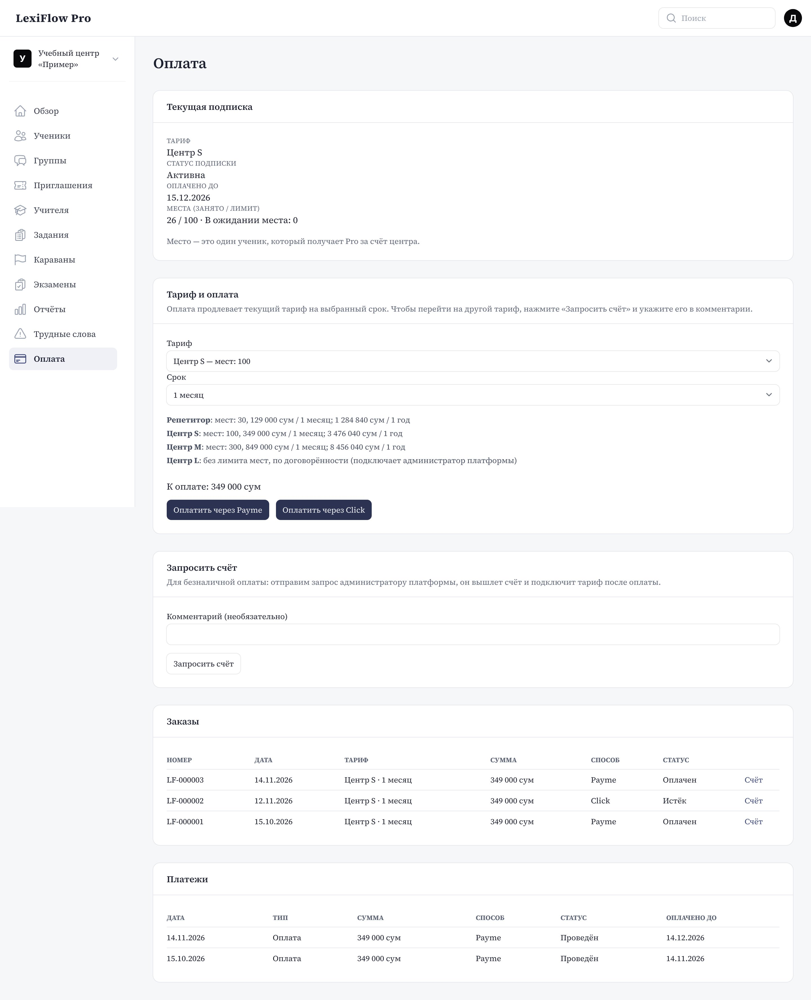
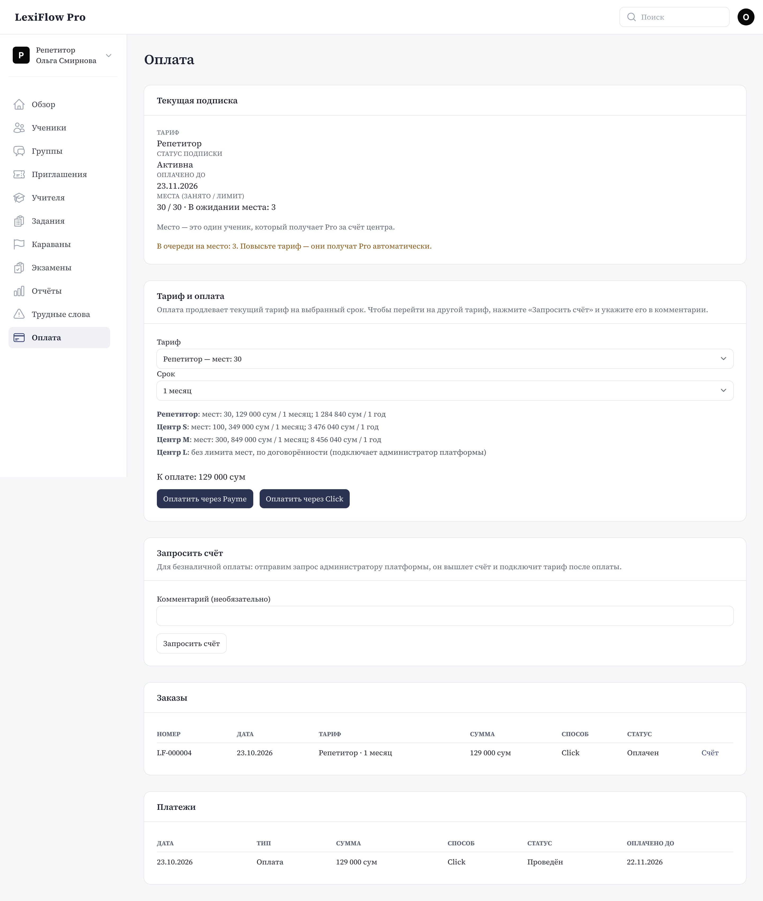
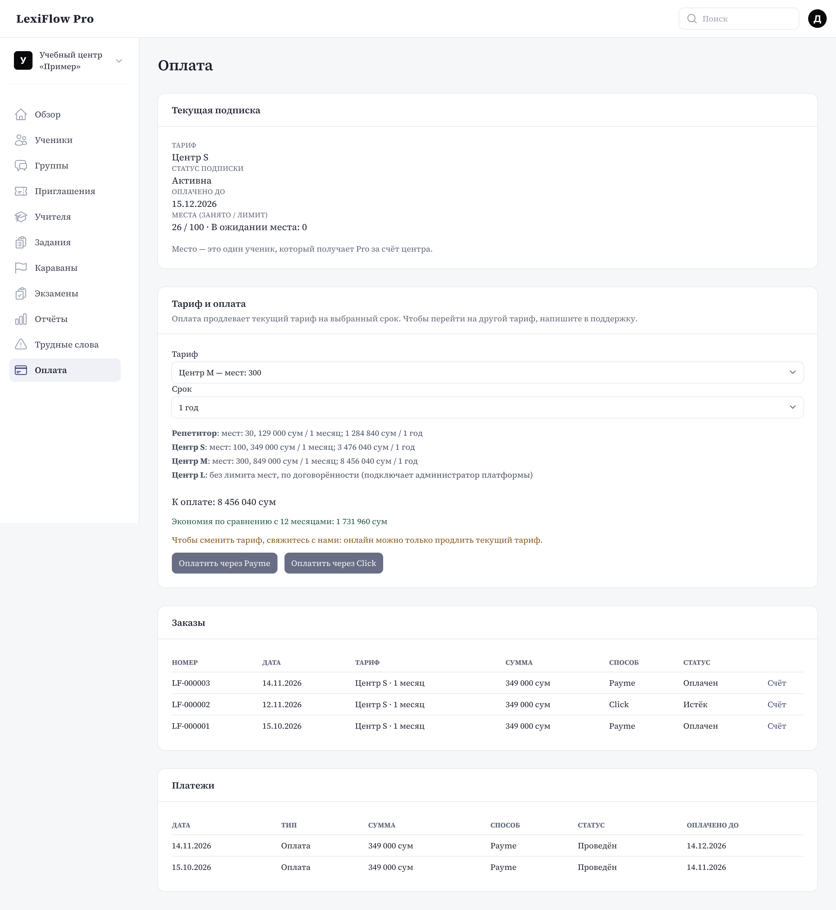
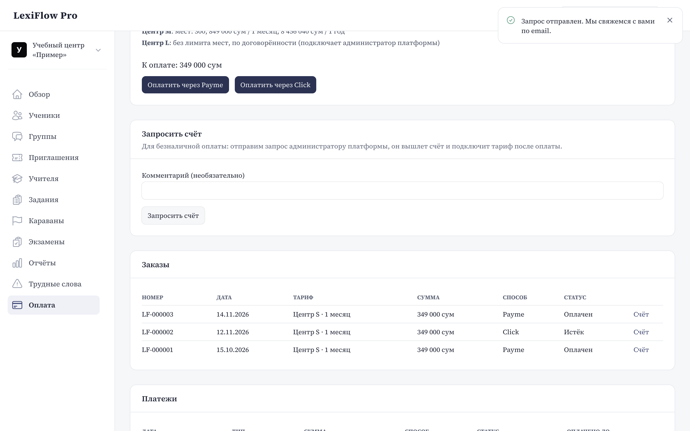
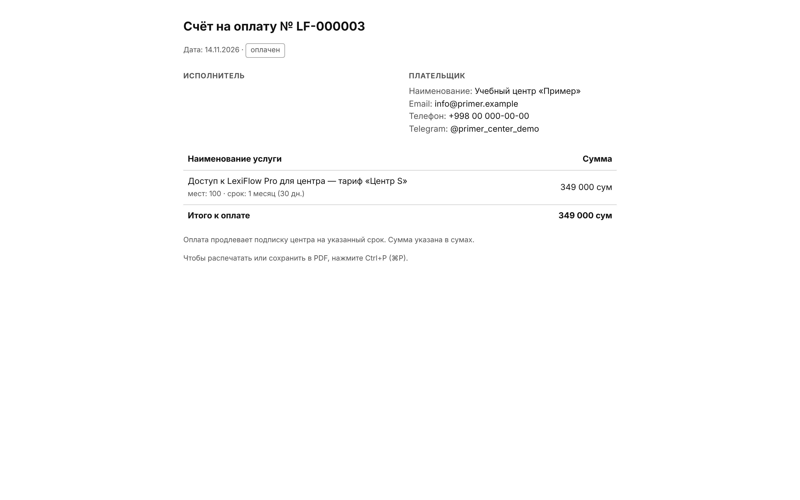
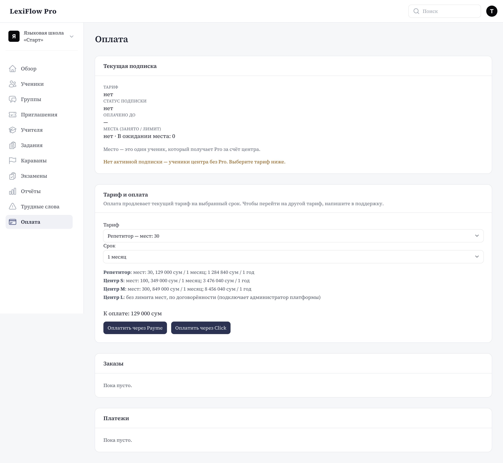

Здесь текущая подписка и места, выбор тарифа и срока, оплата через Payme или Click, запрос счёта для безналичной оплаты и история заказов и платежей.
Кто имеет доступ: только владелец. Учитель раздела не видит, а открыв адрес вручную, получит ошибку 403.

Рис. 62.1. «Оплата» центра на тарифе «Центр S»: подписка активна до 15.12.2026, занято 26 из 100 мест. Ниже — тариф и срок, кнопки оплаты, «Запросить счёт», заказы и платежи.
Текущая подписка
Строка
Значения
Тариф
Репетитор, Центр S, Центр M, Центр L или «нет»
Статус подписки
«Пробный период», «Активна», «Ожидает оплаты», «Отменена (до конца периода)»
Оплачено до
дата окончания оплаченного периода; «бессрочно» для подписки без срока
Места (занято / лимит)
и сколько учеников «В ожидании места»
Под строками кабинет пишет, если есть проблема: «Нет активной подписки — ученики центра без Pro», «В очереди на место: N. Повысьте тариф — они получат Pro автоматически» или «Превышение лимита: занято X из Y мест».
Продлить тариф онлайн
В блоке «Тариф и оплата» выберите тариф и срок: «1 месяц» или «1 год». Под полями — места и цена каждого тарифа.
Проверьте строку «К оплате». Для года кабинет показывает «Экономия по сравнению с 12 месяцами».
Нажмите «Оплатить через Payme» или «Оплатить через Click» — откроется страница оплаты у провайдера. Кнопки есть только у включённых способов.
После оплаты подписка продлевается на выбранный срок, а ученики из очереди получают места по порядку вступления. Неоплаченный заказ закроется сам через 24 часа.

Рис. 62.2. Репетитор: оплачено до 22.11.2026, занято 30 из 30, трое в очереди — пора продлить или перейти на больший тариф.
Сменить тариф
Пока подписка действует, онлайн можно только продлить текущий тариф. Если выбрать другой тариф, кабинет напишет «Чтобы сменить тариф, свяжитесь с нами: онлайн можно только продлить текущий тариф», и кнопки оплаты станут неактивными.

Рис. 62.3. Выбран «Центр M» на год: видна экономия, но оплатить онлайн нельзя — нужна смена тарифа через платформу.
Чтобы перейти на другой тариф (и чтобы получить «Центр L»), нажмите «Запросить счёт» и укажите нужный тариф в комментарии. Смену делает администратор платформы, после этого новый тариф продлевается онлайн. Когда оплаченный период закончился, любой тариф снова можно купить онлайн.
Переход на тариф с меньшим числом мест никого не снимает: ученики с местом его сохраняют. Новые ученики ждут, пока места не освободятся. В списке тарифов такой тариф помечен «меньше, чем занято сейчас».
Запросить счёт (безналичная оплата)
Выберите тариф и срок выше.
В блоке «Запросить счёт» при желании напишите комментарий и нажмите «Запросить счёт».
Кабинет ответит «Запрос отправлен. Мы свяжемся с вами по email». Администратор платформы выставит счёт и подключит тариф после оплаты.

Рис. 62.4. Запрос счёта отправлен. Повторный запрос сразу после этого кабинет попросит отложить на несколько минут.
Блок «Запросить счёт» есть, только если платформа настроила адрес для таких запросов. Если его нет, описание над тарифами говорит «напишите в поддержку».
Заказы, счета и платежи
«Заказы» — все заказы центра с номером (LF-000001), датой, тарифом, суммой, способом и статусом («Ожидает оплаты», «Оплачен», «Отменён», «Истёк», «Ошибка»). Ссылка «Счёт» открывает печатную страницу; сохранить в PDF — Ctrl+P (⌘P). «Платежи» — что реально списано или возвращено, и до какой даты оплачено.

Рис. 62.5. Печатный счёт. Реквизиты плательщика берутся из «Настроек центра», реквизиты исполнителя заполняет платформа (на стенде они пустые).
Когда оплата заканчивается
За 3 дня и за 1 день до конца оплаченного периода владельцу приходит напоминание.
Когда период закончился, ученики центра возвращаются на бесплатный тариф. Данные, группы, задания и отчёты остаются.
Без подписки новые группы не активируются сами при привязке, а «Караван класса» не запускается.

Рис. 62.6. Центр без подписки: «Нет активной подписки — ученики центра без Pro. Выберите тариф ниже».
Ошибки оплаты
Сообщение
Что делать
У центра уже есть неоплаченные заказы
оплатите один из них или подождите — они закроются сами
Платёжный сервис не отвечает
попробуйте через несколько минут
Этот способ оплаты сейчас недоступен
выберите другой способ или запросите счёт
Этот тариф или срок нельзя оплатить онлайн
запросите счёт
Центр приостановлен — оформить заказ нельзя
обратитесь в поддержку платформы
Рис. 62.7. Учитель, открывший адрес «Оплаты» вручную, видит «403 Forbidden».